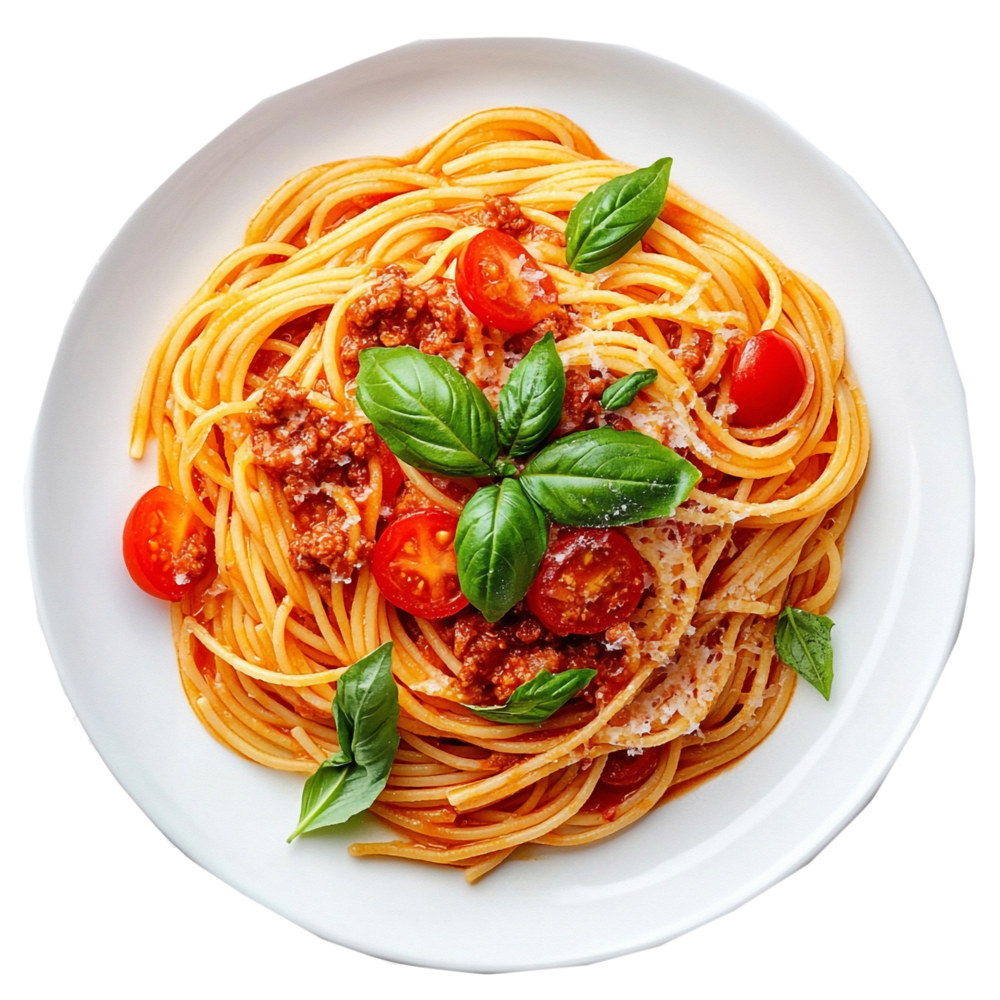
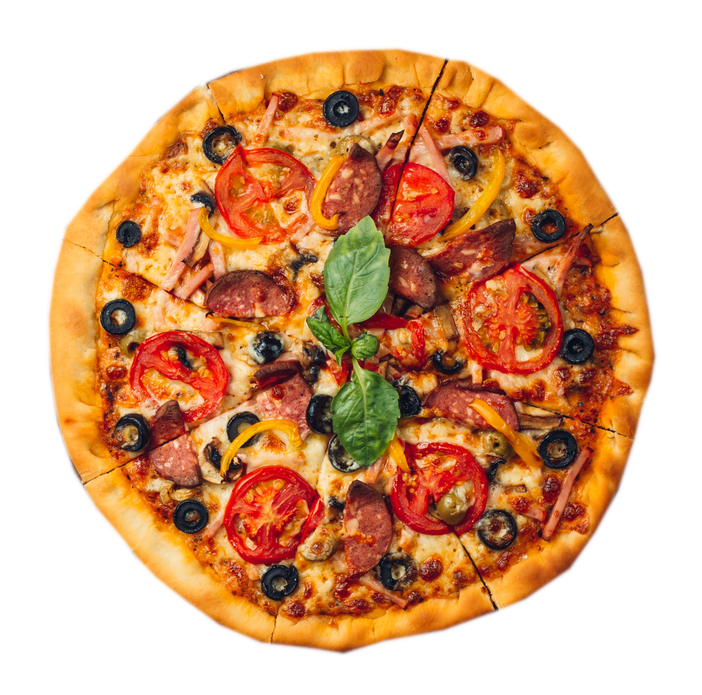
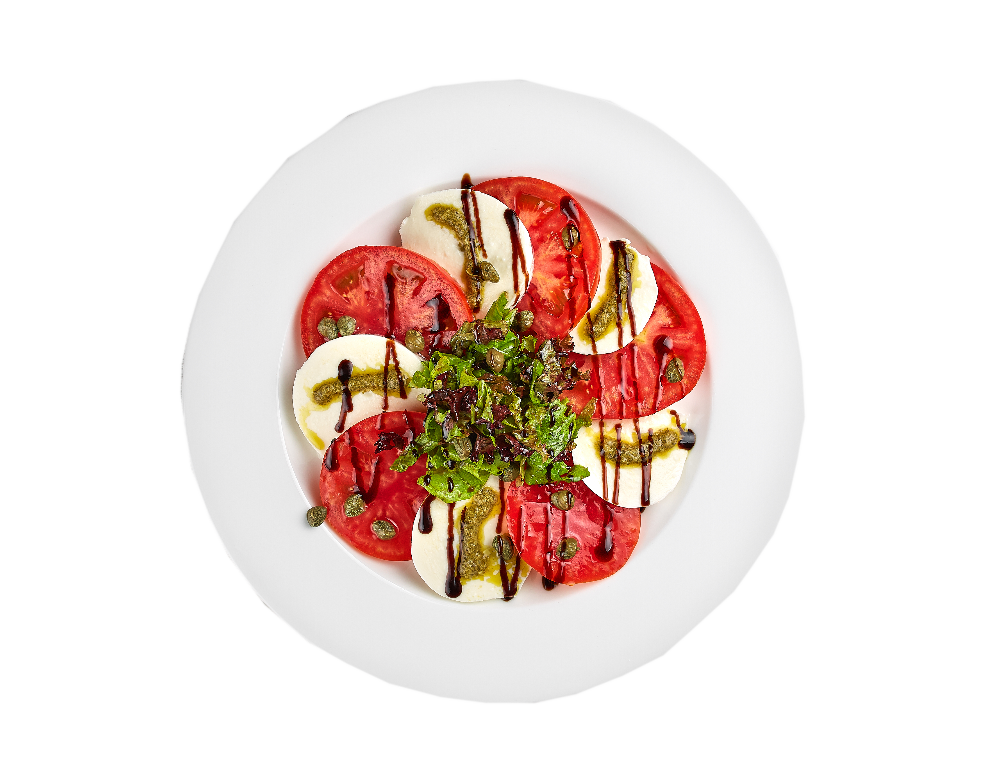
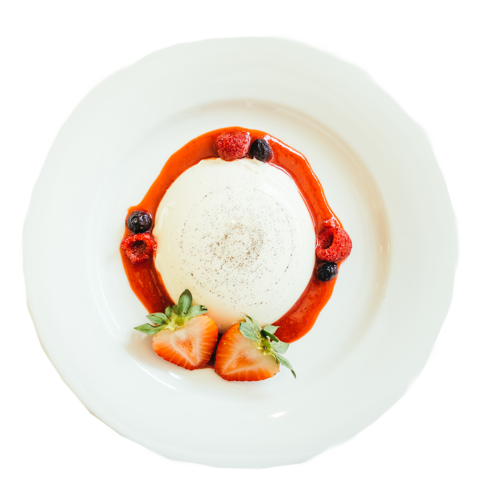
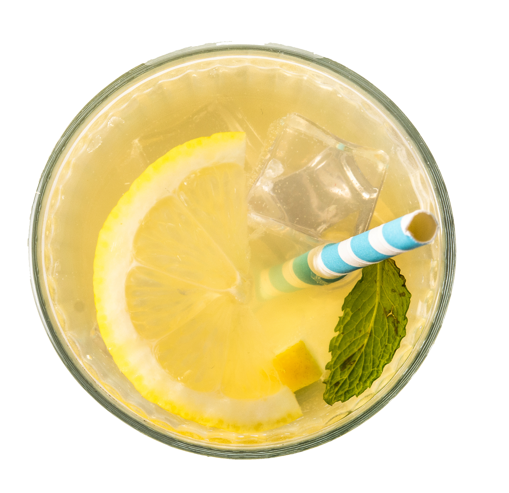
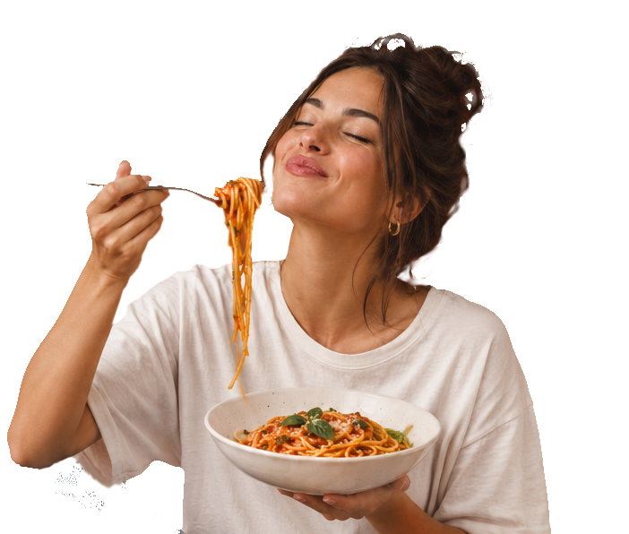

Life is better with a little pasta.
W Tutto Bene nie liczymy czasu, tylko kolejne dokładki. Tu włoskie smaki spotykają się z dobrym vibem, a zwykłe wyjście na jedzenie zamienia się w coś więcej...

Poznaj nas od kuchni...
Mąka na blacie, sos na ogniu i zapach świeżej pasty — tak wygląda nasza codzienność. W Tutto Bene inspirujemy się włoską tradycją, stawiamy na proste składniki i wyraziste smaki, dodając do każdego dania coś od siebie. Wierzymy, że dobra kuchnia to nie tylko jedzenie, ale też ludzie, wspólne chwile i długie rozmowy przy stole. Chcemy, żeby każdy mógł poczuć się u nas swobodnie i zostać na jeszcze jedną porcję. Bo życie jest za krótkie na kiepską pastę.
Na co masz dziś ochotę?
Niebo na cienkim spodzie.
Chrupiące ciasto, aromatyczny sos pomidorowy i ciągnąca się mozzarella — brzmi jak początek czegoś pysznego! Wybierz włoskie klasyki, takie jak Margherita i Capricciosa, albo spróbuj pizzy z salami, rukolą czy świeżymi pomidorami. Każda z nich to mały kawałek włoskiego szczęścia!

Miłość, którą nawija się na widelec.
Kremowe sosy, świeże składniki i makarony przygotowane z miłością do włoskiej kuchni. Spróbuj klasycznego Spaghetti Carbonara, aromatycznego Tagliatelle Bolognese lub delikatnego Penne Alfredo. Znajdź swój ulubiony smak i zakochaj się w nim od pierwszego kęsa!
Coś pysznego na początek
Każda uczta zaczyna się od czegoś małego! Chrupiąca bruschetta z pomidorami, świeża sałatka Caprese czy aromatyczne pieczywo czosnkowe to idealny sposób na rozbudzenie apetytu. Podziel się czymś pysznym z bliskimi i rozpocznij włoską ucztę!


Słodka kropka nad i
Na słodko zawsze znajdzie się miejsce! Spróbuj klasycznego Tiramisu, aksamitnej Panna Cotty z sosem owocowym lub chrupiących Cannoli z kremowym nadzieniem. Pozwól sobie na odrobinę słodkiej przyjemności i zakończ posiłek w najlepszym stylu!
Ugaś pragnienie po włosku
Orzeźwiająca lemoniada cytrynowa, woda z pomarańczą i miętą, a może aromatyczne espresso lub cappuccino? Znajdziesz u nas napoje na każdą okazję — idealne do ulubionego dania lub na chwilę relaksu przy włoskim deserze!

Narobiliśmy apetytu? To teraz czas na rezerwację.
Masz już swojego faworyta? Zbierz bliskich, zarezerwuj stolik i przekonaj się, że na żywo smakuje jeszcze lepiej. W Tutto Bene czekają na Ciebie włoskie klasyki, dobra atmosfera i chwile, które warto celebrować bez pośpiechu.
Zarezerwuj stolik